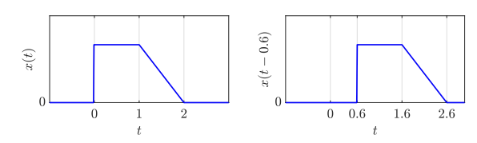
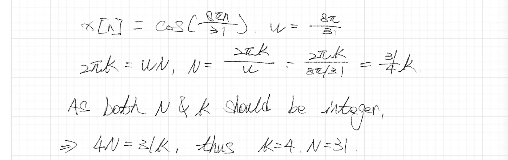
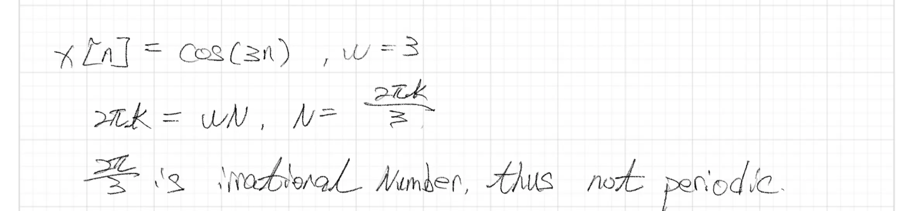

Last Edit: 1/12/26
Last Edit: 1/15/26
Signals #
Continuous-Time Signals #
A continuous-time signal is a function of one (or more) independent variables which range over the real numbers $\mathbb R$
Discrete-Time Signals #
A discrete-time signal is a function of one (or more) independent variables which range over the integers $\mathbb Z$
Time Shift #
We can time-shift a CT signal x by $t_0\in \mathbb R$ to obtain $x(t − t_0)$

- The same applies on DT signals
Signal Convention #
- In time shift formula $x(t-t_0)$, or speicifcally for $t_0$
This means that the sign before $t_0$ is being kept as $-$
- $x(t-t_0),t_0>0$ represent Right Shift, it’s a Delay in time
- $x(t-t_0),t_0<0$ represent Left Shift, it’s a Advance in time
Scaling of Signal #
we can time-scale a CT signal x by $\alpha \in \mathbb R$ to obtain $x(\alpha t)$

- If $\alpha >0$, then its a Compress
- Otherwise its a Scaling
Compressing in DT Signal #
A issue of Compressing DT signal is that DT signal are only being sampling at $n\in \mathbb Z$
- Thus if we Compress n by $\alpha$, this will create a fraction that no longer works

Period #
Periodic CT Signals #
A CT signal $x$ is periodic if $x(t) = x(t + T)$ for some value $T > 0$ and all $t\in \mathbb R$

Fundamental Period #
The smallest such value of T, denoted by $T_0$, is called the fundamental period of x
Period of a Constant CT Signal #
- As for a CT signal that stays constant, we would like to define it as periodic, but not with the period of 0, instead, it should have a period of $T_0=0^+$, that’s the limit approaching 0 from RHS
Period Parameters #
Other than period T, we still got other parameters that describe the Period
- Frequency: $f_0(Hz)=\frac{1}{T_0}$, tells us how fast the signal repeats
- Angular Frequency: $w_0(rad\cdot sec^{-1})=2\pi f_0=\frac{2\pi}{T_0}$
Periodic DT Signals #
A DT signal x is periodic if $x[n] = x[n + N]$ for some integer N ≥ 1 and all $n\in \mathbb Z$
The smallest such value of N, denoted by $N_0$, is called the Fundamental Period of x
Support #
Support of DT Signal #
$$ supp(x) = {n \in \mathbb z~|~x[n] \neq 0} $$
The support tells you where the signal is non-zero

Support of CT Signal #
$$ supp(x) = closure({t ∈ R | x(t) \neq 0}) $$
That is the smallest closed set containing the set ${t ∈ R | x(t) \neq 0}$

Ex. Support of CT Signal #
- If we a continuous function that is nonzero at $[0,1],[2,3]$, then its support is then
$$ [0, 1] \cup [2, 3] $$
Notice that in this case

- This function’s zero points are support, as setting them not support will break the continuity of the whole function
Duration #
In many applications, signals begin at some time and then continue
Right-Sided Signals #
Right Sided CT Signals #
Right-sided from time $T$ if $x(t) = 0$ for all $t < T$
Right Sided DT Signals #
Right-sided from time $N$ if $x[n] = 0$ for all $n < N$

Periodic & Sampling #
There’s two kind of signals, finite and infinite ones, as indicated,
Finite Signal #
Finite Signals equals zero outside some bounded time interval
Or equivalently, we can say that $supp(x)$ is contained in a bounded interval

Sampling from Periodic Signal to Finite Signal #
Periodic Signals are Infinite Signals that repeat itself, by sampling one period from it, we can get the Finite Signal
$$ x_{\mathrm{fin}}(t)=\begin{cases}x_{\mathrm{per}}(t), & 0 \le t < T_0 \0, & \text{otherwise}\end{cases} $$

Calculate the Fundamental Period of Periodic Signal #
Ex. Calculate the FP #

Periodic Extension #
In the previous part, we’ve discussed about the basic definition of “Periodic”, but actually, we can tread “Periodic” as the concept of addition of Infinite Finite Signals
$$ x_{\mathrm{per}}(t)=\sum_{k=-\infty}^{\infty} x!\left(t-kT_0\right)=x(t+T_0)+x(t)+x(t-T_0)+\cdots $$
Odd & Even Signal #
Odd & Even Signal’s definition is as same as the definition for odd & even functions
$$ x_{\text{even}}(t)=\frac{x(t)+x(-t)}{2},\quad{\text{odd}}(t)=\frac{x(t)-x(-t)}{2} $$

Any signal can be decompose into the form of
$$ x =x_{even}+x_{odd}=\frac{x(t)+x(-t)}{2}+\frac{x(t)-x(-t)}{2} $$
Measurement #
Based on the perspective we treat a signal, we can Measure it in different ways
Size of Signal #
In terms of Size, we can treat signal in Action, Energy and Amplitude
Action / L1 Norm #
$$ |x|1 = \int{-\infty}^{\infty} |x(t)| dt $$
- By inspection, this is the Integral of the absolute value of the signal
Energy / L2 Norm #
$$ |x|2^2 = \int{-\infty}^{\infty} |x(t)|^2 dt $$
Amplitude / L_Infinite Norm #
$$ |x|\infty = \sup{t \in \mathbb{R}} |x(t)| $$
Supremum #
Inside a set, there could be infinite Local Maximum, whereas the smallest Local Maximum is Supremum
Ex. Calculate the Norms #
Given the signal
$$ i(t) = \frac{R_2}{R_1 + R_2}, I_0(t), \qquad I_0(t) = e^{-2t}, \quad t \ge 0 $$
$$ | i |_1= \int_0^{\infty} \frac{R_2}{R_1 + R_2} e^{-2t}, dt= \frac{R_2}{R_1 + R_2} \left[ -\frac{1}{2} e^{-2t} \right]_0^{\infty}= \frac{1}{2},\frac{R_2}{R_1 + R_2} $$
$$ | i |_2^2= \int_0^{\infty} \left( \frac{R_2}{R_1 + R_2} e^{-2t} \right)^2 dt= \left( \frac{R_2}{R_1 + R_2} \right)^2\left[ -\frac{1}{4} e^{-4t} \right]_0^{\infty}= \frac{1}{4} \left( \frac{R_2}{R_1 + R_2} \right)^2 $$
$$ | i |\infty= \max{t \ge 0} \frac{R_2}{R_1 + R_2} e^{-2t}= \frac{R_2}{R_1 + R_2} $$
Size of Periodic Signals #
Periodic Signals have infinite length, so when we measure its length, we would like to take only one period and measure
Unit Step & Delta Function #
Unit Step Function #
$$ u(t) = \begin{cases} 1, & t \geq 0 \ 0, & t < 0 \end{cases} $$

The main usage for Unit Step Function are
1. Form Right-Sided Signal #
By multiplying a signal with Unit Signal, this makes it become Right-Sided Signal

2. Build Square Signals #
By using two Unit Signals and minus them, it form a Square Signal in a given time
$$ u(t - k) - u(t - 1 - k) $$

DT Unit Impulse Function #
$$ \delta[n] = \begin{cases} 1, & n = 0 \ 0, & n \neq 0 \end{cases} $$

As indicated, this function’s value is being define with 1 at time $t=0$, while 0 all other times
- This can be shifted by the shift by Time Shift method
Any DT signal can be treated as the addition of scaling Impulse functions
Sampling using Impulse Function #
Impulse Function can be apply on signals to sample the value of signal in a given time

CT Unit Impulse Function #
In continuous case, the Impulse Function is unlike DT signal that has a given value of 1 at time t, instead, it’s actually a rectangle with area of 1

- In this given area, first regard the value of $\Delta$, this rectangle’s area is given by
$$ \text{Height} \times \text{Width} = (1/\Delta) \times \Delta = 1 $$
- So we are now sure that under CT signal, this Impulse is just a rectangle with area of 1
- Now check out the Height, in CT we don’t define the function to have a infinite height
- Instead, we define it as A Undefined Value
Shifting in CT Signal #
In DT, we say Sampling, cause sampling is a discrete behaviour, while in CT we use Shifting as its related to Integral and continuous, but they basically means the same
$$ \int_{-\infty}^{\infty} x(t)\delta(t - t_0) dt = x(t_0) $$
- That is, when we use a signal $x(t)$ to times a Impulse Function at $t_0$ that is $\delta (t-t_0)$, the result will then be $x(t_0)$
Integral and Derivative of CT Impulse Function #
Unit Step function, which looks like

is just the integral of Unit Impulse function that after $t=0$, the area suddenly becomes 1 and stay at one for the rest
Complex Signals #
When learning about Complex Signals, we always want to start with the unit circle

- The Sinusoidal Signal is being created when spinning around the Unit Circle, and the only variable is $\theta$, where as it’s equal $\omega_0t$, so that the x and y values can also being defined by that $\omega_0t$, thus we have
$$ \theta(t) = \omega_0 t, \quad x(t) = \cos(\omega_0 t), \quad y(t) = \sin(\omega_0 t) $$
- Whereas $\omega_0=2\pi f_0=\frac{2\pi}{T_0}$
Phase Shift #
When the input is a AC Voltage, Capacitor will create a Phase Shift on its Current and Volatge
- That being said, in this circuit

$$ i(t) = \cos(\omega_0 t),\quad v(t)=\cos(\omega_0 t+\frac{\pi}{2}) $$
- That is Current leads the Voltage
Complex Number #
Skipping the basic property for Complex Number, two formula needed are
$$ Re{z}=\frac{z+z^*}{z},\quad Im{z}=\frac{z-z^*}{zj} $$
Complex Exponential Signal #
The Euler’s Formula indicated that
$$ e^{j\theta}=\cos\theta+j\sin\theta $$
- Substitue $\theta$ to $\omega_0 t$ to get
$$ z(t) = e^{j\omega_0 t} = \cos(\omega_0 t) + j\sin(\omega_0 t) $$
- This give the way to express sin and cos by Complex Exponential
$$ \sin(\omega_0 t) = \frac{e^{j\omega_0 t} - e^{-j\omega_0 t}}{2j},\quad \cos(\omega_0 t) = \frac{e^{j\omega_0 t} + e^{-j\omega_0 t}}{2} $$
Complex Exponential DT Signals #
For Complex Exponential CT Signals, they are always Periodic, but for DT signals this doesn’t always hold, consider Signal
$$ x[n] = e^{j\omega n} $$

- This signal is periodic when $\omega$ and $2\pi$’s ratio is a Rational Number
- See above image, the left signal has Angular Frequency of $\frac2\pi$, and the right’s is $\frac{5\pi}{6}$
- The left side has the ratio of $\frac{\omega}{2\pi} = \frac{\pi/2}{2\pi} = \frac{1}{4}$, and the right is $\frac{\omega}{2\pi} = \frac{5\pi/6}{2\pi} = \frac{5}{12}$
Whereas in this case

- The Angular Frequency is $\omega =1$, thus $\frac{\omega}{2\pi} = \frac{1}{2\pi}$
A more formal definition for any DT signal $x[n] = e^{j\omega n}$ to be periodic would be
$$ e^{j\omega n} = e^{j\omega (n+N)}\quad for ~all ~n\in\mathbb Z $$
- Expand to get
$$ e^{j\omega n} = e^{j\omega (n+N)}=e^{j\omega n}\cdot e^{j\omega N} $$
- Known that $e^{j2\pi k} = 1$, thus divided both side by $e^{j\omega n}$ to get
$$ 1=e^{j2\pi k} = e^{j\omega N}\Rightarrow 2\pi k=\omega N\Rightarrow k=\frac{2\pi}{N} $$
- $k$: Cycles needed in one period
- $N$: Sampled Points in one period
Ex. Finding the periodicity of Complex Exponential DT Signals #

Ex2. Finding the periodicity of Complex Exponential DT Signals #

Ex3. Finding the periodicity of Complex Exponential DT Signals #

Frequency-periodicity of DT Complex Exponentials #
Above section discussed about the Periodicity of DT Complex Exponential $e^{j\omega n}$’s n, $n$ is the way we describe time in DT Complex Exponential
Now the Angular Frequency $\omega$ also has that Periodicity, which is
$$ e^{j(\omega + 2\pi)n} = e^{j\omega n} \cdot e^{j2\pi n} = e^{j\omega n} $$
- This is because no matter what $n$ is, $e^{j2\pi n}$ is always 1
- This states that DT Complex Exponential Signals’ Frequency are periodic with period of $2\pi$
- i.e. $e^{j\frac{5}{6}\pi n} = e^{j\frac{17}{6}\pi n}$
Aliasing #
Different continuous-time signals, when sampled, can produce the exact same discrete-time signal; this phenomenon is called aliasing

- Notice that the sampled signal are the same from three different CT signals
Nyquist Criterion #
Aliasing is a problem when we are trying to sample CT signals, thus Nyquist Criterion states the way to sampling while avoiding Aliasing, and the statement is that to
- Sampling minimum 2 times in one period can guarantee no aliasing
- That is $f_s > 2f_{max}$, e.x. If CT signal is T = 1 sec, that is f = 1Hz, so $f_{sam}=2Hz$
Periodicity of Discrete-Time Frequency #
The Discrete Time Frequency is also periodic, that being said
| k | Formula | Sequence |
|---|---|---|
| $k=0$ | $e^{j0}$ | $[1, 1, 1, 1]$ |
| $k=1$ | $e^{j\frac{\pi}{2}n}$ | $[1, j, -1, -j]$ |
| $k=2$ | $e^{j\pi n}$ | $[1, -1, 1, -1]$ |
| $k=3$ | $e^{j\frac{3\pi}{2}n}$ | $[1, -j, -1, j]$ |
| $k=4$ | $e^{j2\pi n}$ | $[1, 1, 1, 1]$ |
Discrete-time complex exponential signals are periodic in frequency with a period of $2\pi$, which means that for a signal with a time-domain period of $N_0$, there are exactly $N_0$ distinct frequencies before the patterns begin to repeat